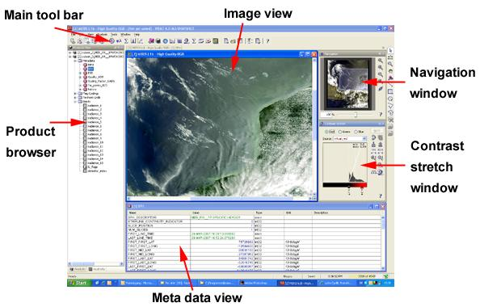

| VISAT Application | |
VISAT is BEAM's visualisation, analysing and processing application. It comes with a clear and intuitive user interface allowing new users to get started quickly.
VISAT let's you switch between a Product Browser providing overview over multiple open products within a tree view and a comprehensive pixel information view to display geophysical values, interpolated tie-points and quality flags at the same time.
The Tool Windows of VISAT provide access to tools, as the name says. These windows can be floating, docked or tabbed. This docking concept allows a tidy work space and you can arrange all tool windows as you like it. All changes you apply to the layout will be saved for the next start of VISAT.
Note: The open command is used to open any product fromat which is supported by BEAM, the save command stores data products in the BEAM-DIMAP format. You can also import any data product by using the corresponding import-command in the File Menu which allows to open a subset of a data product. For a list of supported ENVISAT products please refer to the ENVISAT Product Tables.
A new Image View is simply created by double-clicking on a tie-point grid or spectral/geophysical band. You can open as much images as your computer's RAM allows. After you have opened an Image View you can inspect the images with the Navigation Window.

After you have opened an Image View you can modify the colors of the image using the Colour Manipulation window or overlay an opaque or semi-transparent data mask with the Mask Manager. Both tool windows operate in non-modal mode, which means they float over VISAT's main frame and you can place them somewhere on your desktop.
The following links will guide you through the main components of VISAT's graphical user interface:
The Product Browser
The Tool Windows
The Main Menu Bar
The Tool Bars